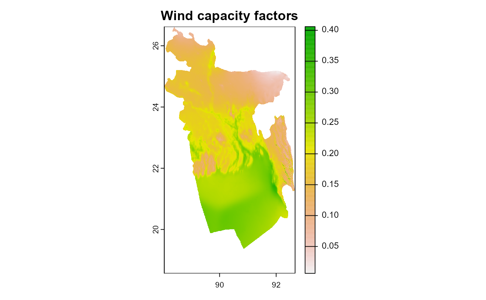
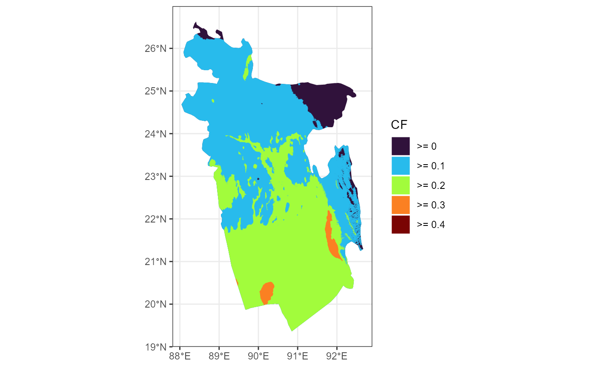

Download annual averages
## set directory for downloaded files, also will be used for quick files access
gwa_set_dir("data/gwa")
## download wind capacity factors for wind-class #1
# gwa_get_wind_cf("BGD", IEC = 1)
gwa_get_wind_cf("BGD", IEC = 2) # wind-class #2
#> [1] "data/gwa/BGD_capacity_factor_IEC2.tif"
# gwa_get_wind_cf("BGD", IEC = 3) # wind-class #3
## download wind speed data
gwa_get_wind_speed("BGD", height = 100)
#> [1] "data/gwa/BGD_wind_speed_100.tif"
# gwa_get_wind_speed("BGD", height = 150)
# gwa_get_wind_speed("BGD", height = 200)
# select data to plot
obj <- gwa_get_wind_cf("BGD", IEC = 2)
## plot
tr <- rast(obj)
plot(tr, main = "Wind capacity factors")
summary(tr)
#> Warning: [summary] used a sample
#> BGD_capacity_factor_IEC2
#> Min. :0.01
#> 1st Qu.:0.15
#> Median :0.19
#> Mean :0.20
#> 3rd Qu.:0.25
#> Max. :0.41
#> NA's :49764Filter and group locations by capacity factor
gwa_tif <- gwa_get_wind_cf("BGD", IEC = 2) # wind-class #2
gwa_iec2_sf <- gwa_group_locations(gwa_tif,
# gis_sf,
int = seq(0, 1, by = .05),
verbose = F, plot_process = F)
ggplot(gwa_iec2_sf) +
geom_sf(aes(fill = eq), color = NA) +
scale_fill_viridis_d(option = "H", direction = 1, name = "CF") +
theme_bw()